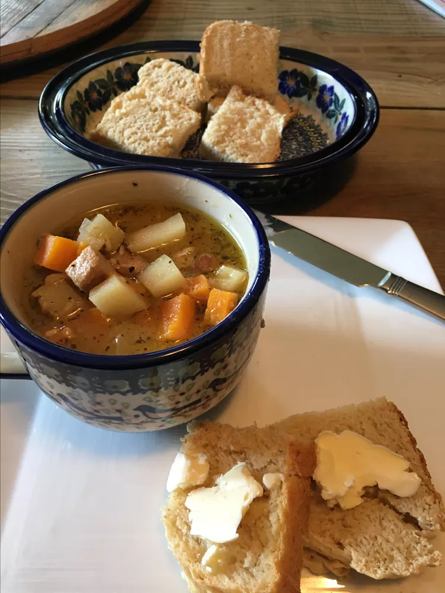

Sweet Potato Stew

Sweet Potato Stew
Description
Pork plus sweet potato equals a lovely stew — tender and delicious!
Ingredients:
- cooking spray
- ¼ cup Dijon mustard
- ⅓ cup brown sugar
- ⅓ cup all-purpose flour
- 3 pounds pork loin, cut into 1-inch cubes
- 3 tablespoons olive oil
- 1 sweet onion, chopped
- 2 cloves garlic, minced
- 1 ⅓ cups chicken broth
- 1 cup dry sherry
- 3 pounds sweet potatoes, cut into 1-inch cubes
- ¼ teaspoon ground black pepper
- ¼ teaspoon crushed dried rosemary
- ¼ teaspoon thyme
- salt to taste
Description
- Preheat the oven to 350 degrees F (175 degrees C). Spray a large casserole dish or Dutch oven with cooking spray.
- Place Dijon mustard in a bowl. Combine brown sugar and flour in a second bowl. Coat pork cubes with Dijon, then toss in brown sugar-flour mixture to coat.
- Heat olive oil in a large skillet over medium heat. Cook brown-coated pork cubes on all sides in hot olive oil, about 3 minutes per side. Transfer browned pork into the prepared casserole dish, leaving oil in skillet.
- Cook and stir onion and garlic in the hot skillet until onions are soft, about 5 minutes. Stir chicken broth, sherry, sweet potato cubes, black pepper, rosemary, thyme, and salt into onion; bring to a boil. Pour sweet potato mixture over pork and cover casserole dish.
- Bake in the preheated oven for 50 minutes; uncover and bake until pork is no longer pink inside and sweet potato cubes are tender, about 20 more minutes.
Odin Recipes